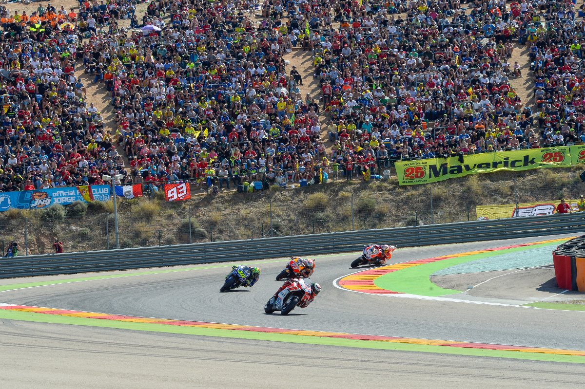

Circuito JMIO
Nuestro circuito

Desde 1999 nuestro circuito a sido lugar numerosas competiciones y del disfrute de nuestros espectadores y pilotos. El cicuito JMIO nacio como una idea en la mente de unos aficionados a las motos que gracias a su a fan a este hobbie y sus multiples aportaciones lograron hacer su sueño realidad.
A dia de hoy este circuito es lugar de competiciones intensas y emocinantes. Quien venga a competir en este circuito se encontrara con unas instalaciones seguras y modernas preaparadas para ofrecer las mejores sensaciones posibles al correr en la pista. Ademas el circuito esta en continuo mantenimiento por nuestros trabajadores que hacen un trabajo exelente para que las carreras puedan continuar con normalidad.

Pero aqui no solo se divierten los pilotos por que para los espectadores tambien tenemos unos asientos comodos y un servicio de catering rapido y exquisto para que os sintais como en casa